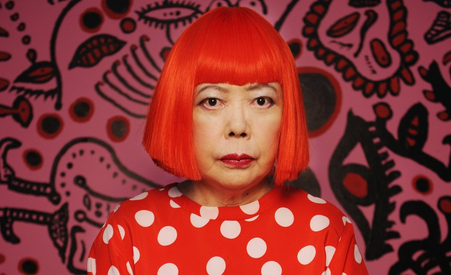

Yayoi Kusama
Current Page:Home
Life Story
Art Work
books
Yayoi Kusama
Yayoi Kusama is a Japanese contemporary artist who works primarily in sculpture and installation, but is also active in painting, performance, video art, fashion, poetry, fiction, and other arts.
Her work is based in conceptual art and shows some attributes of feminism, minimalism, surrealism, Art Brut, pop art, and abstract expressionism, and is infused with autobiographical, psychological, and sexual content. She has been acknowledged as one of the most important living artists to come out of Japan.
Art makes the world better.
